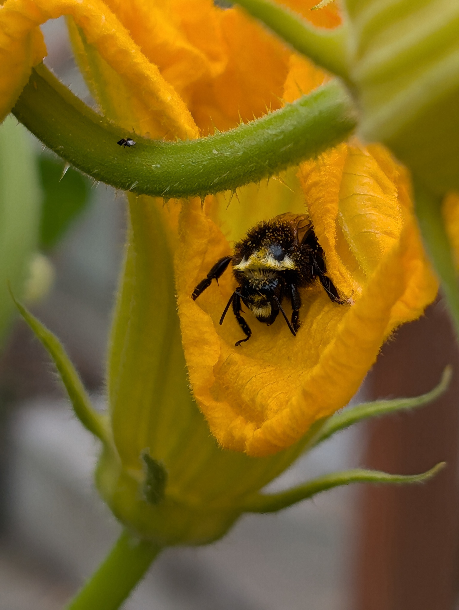

The Agricultural Future & Training Initiative (AFTI) bridges the gap between under-utilized land and next-generation growers. We combine rigorous vocational pathways, custom advisory SOP alignment, and cooperative land-linking frameworks to deploy elite field teams that ensure mutual economic revitalization and regional food security across Linn County.

Restoring under-productive land assets into high-yield community infrastructure.
Grow Ahead, Build Your Future, Heal The Land. Watershed Stewards / Outgrowing-Ag
Whether you are an agricultural recruit, a military veteran transitioning into civilian enterprise, or a seasonal participant joining our reserve pool, Outgrowing-Ag builds your professional portfolio from day one. Master high-tunnel management, irrigation telemetry, precision crop rotation, forestry safety, wilderness burn scar environmental remediation strategies and research data tracking through hands-on rotations.
Landowner Partnerships & Farm Income Solutions
Turning underutilized land into productive, high-value assets through collaborative lease frameworks and structured enterprise splits. Shared Harvest is specifically designed to boost profitability while providing essential surge labor and harvest-saver support to local producers.
Test Your Farming Future
The Battle to Save the Farm
Have you dreamed of growing your own food one day on your own land? Try our simulator. Can you outsmart unpredictable weather and the Bank Boss in a high-stakes showdown to save the farm?
Play Simulator-Battle →Land Acquisition Option
You've secured a 10-acre lease. Make sharp choices, work hard, and earn enough keen sense to secure the permanent title deed.
Be the Farmer. Buy the Farm →Shared Crops Calculator
Evaluate upfront costs, labor demands, and strategic timing for different crop tiers before you plant.
Specialty Crops System Design
Review high-tunnel setups, irrigation grids, and specialized tools required for advanced crop scaling.
Garden "Rescue" & Challenge
Submit your layout roadblocks or pest challenges! Selected community garden sites receive a site visit and consultation from a 5-person field cell under our Pay-It-Forward Reciprocity Clause.
🌟 Ready for the Challenge? Pick Your Path! 🌟
Crayon Sketch to Master Plan
Experience our 4-stage interactive design animation showing how rough community ideas transform into professional architectural blueprints.
Enterprise Overview & Scalable Model
The Shared Harvest Incubator & Watershed Restoration Enterprise is an integrated, scalable agricultural model designed to address critical regional production bottlenecks and workforce shortages through a dual-track training ecosystem. Operating across five modular production systems (High-Tunnel Greens, Specialty Cut Flowers, Pollinator/Apiary Lanes, Mushroom Cultivation, and Watershed Remediation), the enterprise bridges commercial agriculture with vocational rehabilitation for military veterans and agricultural recruits. The program utilizes a rigorous, tiered participation architecture: Tier 1 supports a core cohort of 10 intensive trainees executing foundational infrastructure build-outs and rotational management; Tier 2 mobilizes an enterprise reserve pool of surge harvesters via earned-income and piece-rate models to directly stabilize regional farm labor shortages during peak harvest; and Tier 3 deploys skilled work-teams for regional wildfire-fuel reduction and public land watershed restoration. By anchoring financial sustainability to a milestone-driven enterprise output and landowner partnerships, the model replaces permanent grant dependency with a self-sustaining economic engine that delivers measurable environmental, food security, and workforce outcomes.
Verifiable Land Stewardship & Community Pathways
Welcome to the Agricultural Training and Land-Linkage Portal. We bridge the gap between barrier-free entry (supporting youth, veterans, and unhoused individuals) and independent farm stewardship through verifiable proof-of-work portfolios.
Explore the Four-Season Agricultural Pathway
Discover how our participants rotate through winter planning, spring planting, summer cultivation, and fall harvest. Watch how graduating leaders train incoming cohorts to create a self-sustaining, community-driven harvest share system.
Commercial Drone Licensing & Field Operations
Master FAA Part 107 regulations, airspace navigation, and telemetry data collection. Equip yourself for high-impact careers in emergency response, aerial mapping, and regional watershed restoration.
Ground Crew & Visual Observer (VO) Training
Get hands-on immediately. Master field safety, emergency protocols, and earn your mandatory FAA TRUST safety certificate to join active operations while you train for your Part 107 license.
Skill Matching & Audit Engine
Manage participant skill tracks, map partner job wish lists, and run live competency gap audits for active field deployment.